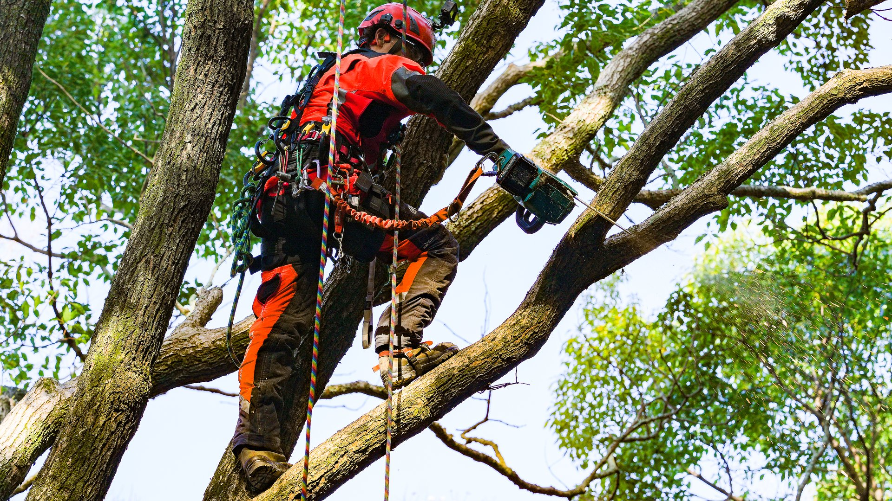
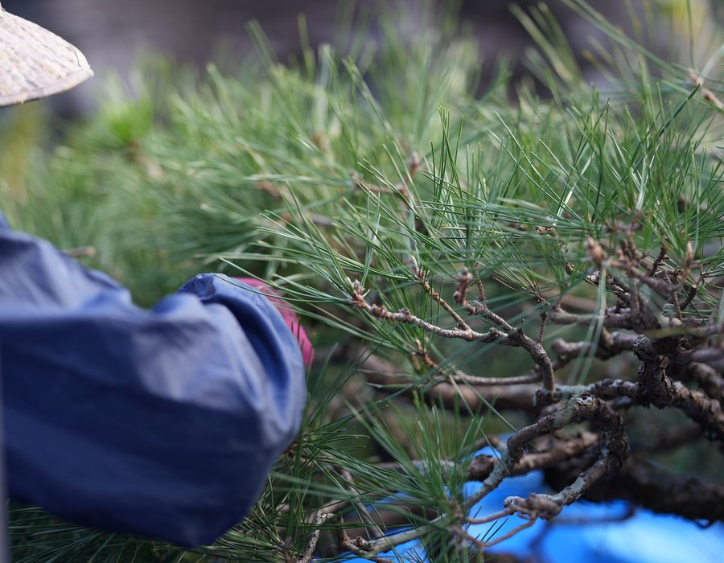

庭木の剪定から高木の特殊伐採まで。
半世紀にわたり、樹と人の暮らしをつなぎ続けてきた宗像の造園会社。
木は一本一本、性格が違う。その樹をよく見て、時に寄り添い、時に大胆に手を入れる。それが造園の仕事の本質です。
松本造園は、宗像の地で半世紀にわたり、樹と人の暮らしのあいだに立ち続けてきました。
会社について詳しく
手仕事から重機を使った作業まで。庭づくり・維持管理・特殊伐採を一貫して担います。

個人宅から法人・公共施設まで。樹の生育サイクルを見据えた適切な剪定と、長期的な庭のメンテナンスを行います。

植栽計画から施工まで。植物の特性を活かし、その場所に長く根ざす庭を設計・施工します。

クレーンや高所作業車が入れない場所での高木伐採。ロープワークと重機を組み合わせた高度な技術で対応します。